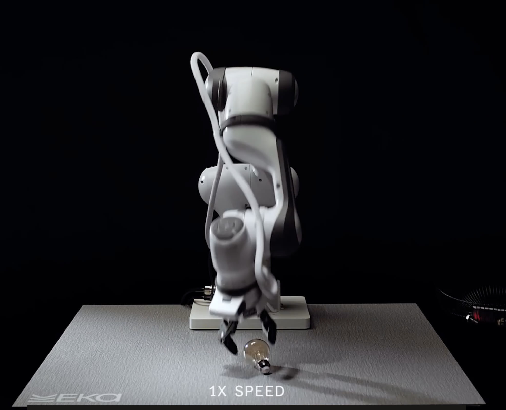
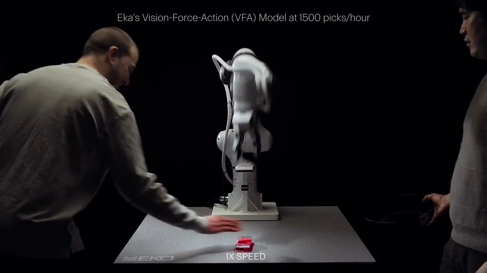

Executive Summary
이 글은 미국 로봇 스타트업 에카 로보틱스(Eka Robotics)가 2026년 10월 20일 공개한 로봇 손 성적을 어떤 조건까지 붙여서 읽어야 하는지를 본다. 회사는 a16z와 F-Prime이 공동 주도한 1억 5천만 달러 규모의 시리즈 A를 받았고, 기업가치는 14억 5천만 달러로 평가됐다. 창업자는 MIT 교수 풀킷 아그라왈과 구글 딥마인드 출신 연구자 투오마스 하르노야다.
가장 많이 인용된 숫자는 시간당 1,500개다. 사람의 기준선은 시간당 약 600개이니 두 배 반이다. 그런데 같은 숫자를 회사와 언론과 투자사가 서로 다른 말로 설명한다. 조건을 가장 구체적으로 적은 쪽은 투자사 a16z이고, 그 글은 1,500개를 실험실의 집기 과제에서 나온 값으로 적으면서 "교대 근무 전체를 통틀어 그 성능을 유지하는 것이 다음 시험"이라고 덧붙였다.
5절까지는 회사 발표와 보도, 투자사 공개 글에 적힌 사실을 따라간다. 이 구조가 피지컬 AI 데이터를 모으는 쪽에 무엇을 묻게 하는지를 다루는 6절은 이 글의 해석이다.
주요 수치
앞의 둘은 회사가 내세운 성능이고, 뒤의 둘은 그 성능을 공장으로 옮길 때 걸리는 조건이다.
출처: 에카 로보틱스 공식 발표 · TechCrunch · a16z (2026년 10월 20일)
1,500 : 600
시간당 집는 개수
앞이 로봇, 뒤가 사람 기준선이다. a16z는 실험실 집기 과제의 값이라고 적었다
95% 이상
집기 성공률
1kg 이하 물체 기준. 학습 분포 밖의 물체도 재학습 없이 집었다는 회사 설명이 붙는다
500만 → 2천만
그리퍼 사이클
앞이 현재 정격이고 뒤가 산업용 로봇팔이 맞춰 둔 기준선이다. 뒤는 아직 목표다
1,000달러 미만
그리퍼 하드웨어 원가
힘을 읽는 손을 이 값에 만들었다는 점이 도입 비용 쪽의 숫자다
시간당 1,500개가 나온 자리
에카 로보틱스는 로봇 팔 끝에 달리는 손, 그러니까 물건을 집고 끼우고 돌리는 부분을 만드는 회사다. 10월 20일 발표한 시리즈 A는 1억 5천만 달러이고 a16z와 F-Prime이 공동으로 주도했다. 시드 단계를 이끌었던 오비어스 벤처스와 E14 펀드가 이어서 참여했고, MFV 파트너스와 바이슨 벤처스, 글래스윙 벤처스, 삼성넥스트, 그리고 이름을 밝히지 않은 포춘 500대 기업 몇 곳이 신규로 들어왔다. 투자 후 기업가치는 14억 5천만 달러다.
발표와 함께 퍼진 숫자가 시간당 1,500개다. 회사 블로그의 문장은 이렇다. "우리 로봇은 학습 분포 밖의 다양한 물체를 시간당 1,500회라는 초인적 속도로 집는다. 사람의 기준선인 시간당 약 600회의 대략 두 배 반이다." 테크크런치는 같은 숫자에 무게 조건을 붙여, 1kg 이하 물체를 시간당 약 1,500개 집고 성공률은 95%를 넘는다고 전했다.
조건을 가장 정확하게 적은 쪽은 뜻밖에도 투자사다. 라운드를 주도한 a16z가 같은 날 올린 투자 공지에는 이렇게 적혀 있다. "에카는 실험실 인덕션과 빈피킹 과제에서 시간당 최대 1,500개의 집기를 보고하며, 이는 사람보다 두 배 반 빠르다." 인덕션은 물류 창고에서 물건을 하나씩 집어 분류 설비에 올려 주는 공정이고, 빈피킹은 상자 안에 뒤섞여 있는 물건을 하나씩 집어내는 일이다. 둘 다 집는 동작이 반복되는 과제이고, 조립이나 배선처럼 끼우고 조이는 공정과는 성격이 다르다.
같은 글이 에카의 조작 능력을 소개하며 적은 범위는 그보다 넓다. 깨지기 쉬운 물체와 미끄러운 산업용 부품, 그리고 접촉이 많은 끼움 작업까지를 함께 적어 뒀다. 다만 시간당 1,500개라는 숫자가 붙어 있는 자리는 앞의 두 과제뿐이다. 능력으로 소개한 범위와 수치가 보증하는 범위가 같지 않다.
같은 글은 산업 자동화의 성적표가 무엇으로 매겨지는지도 함께 적었다. 시간당 처리량, 오류율, 가동 시간, 단위당 비용이다. 그러고는 "교대 근무 전체를 통틀어 그 성능을 유지하는 것이 다음 시험"이라고 덧붙였다. 투자사가 자기 포트폴리오 회사를 소개하는 글에 적은 단서라는 점에서 이 문장은 꽤 무겁다. 1,500개는 현재의 최고 기록이고, 공장이 요구하는 것은 그 기록을 여덟 시간 내내 같은 수준으로 반복하는 일이다.

쥐는 일은 눈이 아니라 손끝이 한다
회사가 만드는 모델의 이름은 VFA다. 시각(Vision)과 힘(Force)과 행동(Action)의 앞 글자를 땄다. 최근 몇 년 로봇 분야에서 가장 많이 쓰인 말은 VLA였다. 가운데 글자가 언어(Language)여서, 사람이 말로 지시하면 모델이 보고 움직이는 구조다. 에카는 그 가운데 자리를 힘으로 바꿨다.
아그라왈이 테크크런치에 설명한 이유는 직관적이다. "마지막 1밀리미터 문제를 푸는 주된 수단은 시각이 아니다. 시각은 물체가 대략 어디에 어떤 자세로 있는지를 알려 주지만, 실제로 쥐는 일과 실제로 더듬는 일은 힘을 통해 일어난다." 눈을 감고도 주머니 속에서 열쇠를 찾아내는 사람의 손을 떠올리면 이해가 빠르다. 손끝이 닿는 순간부터는 보는 것이 아니라 느끼는 것이 일을 끝낸다.
공동 창업자 하르노야는 접근 방향을 이렇게 요약했다. "이 분야 대부분은 계획에 집중해 왔다. 위에서 접근하는 방식이다. 높은 수준의 지능을 먼저 두고 그것을 물리 쪽으로 밀어 내린다. 우리는 아래에서 위로 생각한다." 아래가 힘이고 접촉이다. 테크크런치는 생성형 로봇 모델의 현재 방향을 비판해 온 로드니 브룩스를 함께 언급하면서, 힘과 촉각을 표현하려는 시도 없이는 그 모델들이 실패하리라는 지적이 있어 왔다고 적었다.
힘을 읽으려면 손이 먼저 그렇게 만들어져 있어야 한다. 에카가 함께 공개한 숫자가 그리퍼 하드웨어 원가 1,000달러 미만이다. 힘에 민감한 손을 비싸게 만드는 일은 전에도 가능했다. 이 가격대에서 만들었다는 점이 도입 쪽에서는 성능만큼 중요한 조건이다.
사람 시연을 베끼지 않으면 데이터는 누가 만드나
이 발표에서 수치보다 오래 눈이 머무는 대목은 선언 한 줄이다. 회사 블로그에 이렇게 적혀 있다. "범용 로봇을 잘 작동하게 만드는 길은 사람 데이터를 모방하는 데 있지 않고 물리를 터득하는 데 있다." 로봇 학습의 주류는 오랫동안 반대쪽이었다. 사람이 원격 조종 장치로 로봇을 움직이거나 직접 작업하는 모습을 찍어 모으고, 모델이 그 궤적을 따라 하도록 가르치는 방식이다.
에카가 택한 쪽은 물리 시뮬레이션 안의 강화학습이다. 회사 설명은 이렇다. "시뮬레이션에서는 물체와 환경과 물리 조건을 바꿔 가며 수천 시간 분량의 로봇 경험을 몇 분 만에 만들어 낼 수 있다." a16z의 글은 그 안에서 무엇이 달라지는지를 조금 더 적었다. 가상의 로봇이 물체의 위치와 마찰과 접촉을 수백만 가지로 바꿔 가며 연습하고, 그 과정에는 사람이 좀처럼 시연하지 않는 실패 상황도 포함된다는 것이다.
마지막 대목이 핵심이다. 사람 시연 데이터에는 사람이 실제로 해 본 동작만 들어간다. 손에서 물건이 미끄러지기 시작하는 순간이나 잘못 쥐었다가 고쳐 쥐는 경로처럼, 작업자가 반복해서 보여 줄 이유가 없는 상황은 더미에 잘 쌓이지 않는다. 시뮬레이션은 그 구간을 의도적으로 만들어 낼 수 있다. a16z가 이 차이를 요약한 문장은 이렇다. 로봇의 경험이 사람의 노동이 아니라 연산 자원에 비례해 늘어난다는 것이다.
그런데 같은 글은 이 방식의 약한 고리도 숨기지 않았다. 시뮬레이션은 현실이 아니고, 접촉의 역학은 모형으로 옮기기 어렵기로 이름난 문제다. 그래서 시뮬레이션과 현실 사이의 간격을 좁히는 일이 로보틱스에서 가장 어려운 문제 가운데 하나로 남아 왔다고 썼다. 물리 엔진이 데이터를 만든다는 말은 데이터가 공짜로 생긴다는 뜻이 아니다. 무엇을 얼마나 닮게 만들었는지가 그대로 성능의 조건이 된다는 뜻이다.
데이터를 만드는 주체가 사람에서 물리 엔진으로 옮겨 가면, 품질을 확인하는 질문도 함께 바뀐다. 사람 시연 데이터에서는 누가 어떤 동의 아래 찍었고 라벨이 작업 의도와 맞는지를 확인했다. 시뮬레이션 데이터에서는 그 자리에 다른 질문이 들어선다. 가상의 물리 조건이 실제 현장의 분포를 덮고 있는가, 그리고 덮지 못한 구간은 어디인가.
실험실 성적표와 교대 근무 성적표
로봇을 직접 본 연구자들의 반응은 호의적이다. 일리노이대의 크리스 하우저는 에카의 로봇이 "재학습 없이 아주 많은 종류의 물체에 적응할 수 있었다"고 말하면서, 첫 시도에 실패하면 될 때까지 다시 시도하는 모습에 "사람 같음, 섬뜩할 만큼의 사람 같음"이 있었다고 덧붙였다. 프런티어 연구소에 몸담아 익명을 요청한 다른 로봇 연구자는 에카의 로봇이 움직이는 모습을 본 경험이 5~10년 전 보행 로봇이 처음으로 안정적으로 걷게 됐을 때와 비슷한 감흥이었다고 테크크런치에 전했다.

같은 하우저가 가장 큰 과제로 꼽은 것은 속도가 아니었다. "큰 숙제는 실제 조립 라인에서 시스템 통합 업체와 일할 때 찾아온다. 1년 내내 고장 없이 돌아가야 한다." 공장의 성적표는 최고 기록을 적는 칸이 아니라 멈추지 않은 시간을 적는 칸이라는 뜻이다.
그 간격은 회사가 공개한 숫자 안에도 들어 있다. 아그라왈이 밝힌 바로는 현재 에카의 그리퍼 하드웨어는 500만 사이클을 견디도록 정격이 매겨져 있고, 최종 목표는 표준 산업용 로봇 팔이 맞춰 둔 2천만 사이클이다. 지금 성능은 그 기준선의 4분의 1 자리에 있다. 회사는 아직 비공개 시범 적용 단계에 있다. 테크크런치는 에카가 여러 산업 고객과 함께 집어 옮기는 작업과 전선을 다루는 작업으로 시범을 돌리고 있다고 전했다. 전선을 다루는 일은 1절에서 본 집기 과제와 성격이 다른 쪽이고, 그 작업의 성적은 아직 숫자로 공개되지 않았다.
투자사 쪽의 기대는 그보다 앞서 있다. a16z의 라구 라구람은 "특정 과제에서는 이미 초인적 성능을 넘어서고 있고, 앞으로 몇 달 안에 많은 정교한 조작 과제에서 초인적 성능이 나올 것이라 본다"고 말했다. 그래서 이 소식에서 갈라서 읽어야 할 것이 세 가지다. 로봇이 실험실 과제에서 빠르다는 사실, 학습하지 않은 물체에도 재학습 없이 적응한다는 사실, 그리고 그 성능이 공장 교대 근무를 끝까지 버틴다는 주장이다. 앞의 둘은 여러 사람이 눈으로 확인했고, 세 번째는 회사도 투자사도 아직 다음 과제라고 적은 자리다. 회사 발표문의 마지막 대목도 같은 곳을 가리킨다. 이번에 보인 능력을 실제 운영에서 지속되고 믿을 만한 성능으로 바꾸는 데 초점을 둔다는 문장이다.
같은 라운드에 삼성넥스트가 들어왔다
한국 쪽에서 이 라운드를 볼 이유는 투자자 명단에 있다. 에카가 공개한 신규 투자자 가운데 삼성넥스트가 들어 있다. 삼성전자의 투자 전문 자회사다. 금액은 공개되지 않았다.
국내에서는 더트래커가 이 참여를 삼성전자의 전략적 투자로 단독 보도하면서, 에카가 레인보우로보틱스의 로봇을 기반으로 로봇 팔 말단장치인 덱스터러스 핸드 프로젝트를 진행 중이라고 전했다. 이 대목은 에카 공식 발표에도 테크크런치 기사에도 나오지 않는다. 한국 매체 한 곳의 보도이므로 확정된 사실로 읽기보다 그렇게 보도됐다는 선에서 두는 편이 맞다.
보도가 맞는다면 구도는 이렇게 된다. 삼성전자는 콜옵션을 행사해 레인보우로보틱스의 최대주주가 됐고, 레인보우로보틱스는 로봇 완제품과 함께 액추에이터와 덱스터러스 핸드 같은 핵심 부품을 개발하고 있다. 같은 기술 영역의 미국 스타트업에 삼성넥스트를 통해 한 번 더 들어간 셈이다. 손을 만드는 쪽과 손을 똑똑하게 만드는 쪽을 나란히 쥐는 포트폴리오다.
페블러스가 이 소식을 주목하는 이유
피지컬 AI를 둘러싼 논의는 대체로 모델 쪽에서 출발한다. 이번 발표에서 흥미로운 지점은 모델이 아니라 재료 쪽에 있다. 사람 시연을 모아 베끼게 할 것인가, 물리 엔진에 경험을 만들게 할 것인가는 결국 무엇을 수집하고 무엇으로 품질을 측정할 것인가의 문제다. 수집 방식이 바뀌면 품질 지표도 함께 바뀐다.
사람이 만든 시연 데이터에서는 출처와 동의와 라벨 일관성이 품질의 축이었다. 누가 찍었고 어떤 권리 아래 쓰이는지, 같은 동작에 같은 라벨이 붙었는지를 확인했다. 시뮬레이션이 데이터를 만들면 축이 분포 쪽으로 옮겨 간다. 연습한 마찰과 무게와 자세의 범위가 실제 라인의 범위를 덮는가, 덮지 못한 구간에서 성공률이 얼마나 떨어지는가를 확인해야 한다. 실험실 과제의 성적이 그대로 현장 성적이 되지 않는 이유도 대개 이 간격에 있다.
그래서 공장 쪽에서 던질 질문은 시간당 몇 개인가보다 한 단계 뒤에 있다. 교대 근무 한 번을 끝까지 버티는 성적은 어떤 데이터로 증명되나. 이 질문에 답하려면 집은 개수만이 아니라 실패한 집기의 유형과 그때의 물체 조건, 다시 시도해 성공하기까지 걸린 시간, 누적 사이클에 따른 성공률 변화가 함께 기록돼 있어야 한다. 그 기록이 없으면 도입을 검토하는 쪽은 판매사가 내놓은 최고 기록과 자사 라인의 조건을 맞대 볼 방법이 없다.
페블러스가 데이터를 AI가 바로 쓸 수 있는 상태로 만드는 일을 하면서 늘 함께 보는 것이 이 기록 구조다. 성능 수치는 어느 조건에서 나왔는지가 적혀야 비교할 수 있는 값이 되고, 실패는 기록돼야 개선의 재료가 된다. 에카의 발표가 흥미로운 이유는 숫자가 커서가 아니라, 투자사가 그 숫자 옆에 과제의 이름을 적어 뒀기 때문이다. 조건이 적힌 수치는 검증할 수 있고, 조건이 지워진 수치는 그럴 수 없다.
Editor's Note
이 글은 에카의 성적을 깎으려는 글이 아니다. 로봇을 직접 본 연구자들의 반응은 분명했고, 힘을 모델의 중심에 둔 선택은 그 자체로 들여다볼 가치가 있다. 다만 이 글이 붙인 조건은 대부분 회사와 투자사가 스스로 적어 둔 것이다. 발표문에 이미 적힌 단서를 지우지 않고 그대로 옮기는 일이 독자가 할 수 있는 첫 검증이다.
여기까지 읽어 주셔서 감사하다. 이 글의 수치와 인용은 에카 로보틱스 공식 발표와 a16z 투자 공지, 테크크런치 기사에서 직접 확인했고, 한국 매체 한 곳만 전한 대목은 그렇게 표시했다. 현장에 로봇을 들이는 일을 검토하고 계신다면 어떤 기록을 받아야 안심이 되는지 들려주시면 좋겠다.
(주)페블러스 데이터 커뮤니케이션팀
2026년 10월 22일
참고문헌
1차 출처
- 1.Eka Robotics. (2026). "Eka Robotics Raises $150M to Build Superhuman Intelligence for the Physical World." Eka Robotics Blog.
- 2.a16z. (2026). "Investing in Eka Robotics." a16z.
보도
- 3.Fernholz, T. (2026). "Eka is worth $1.45 billion thanks to a physical AI model that has experts raving." TechCrunch.
- 4.AI매터스. (2026). "물건 집는 로봇 AI 개발사 에카, 1,985억 원 투자 유치."
- 5.더트래커. (2026). "[단독]삼성전자, 美 로봇 스타트업 'EKA로보틱스' 전략적 투자." 삼성넥스트의 전략적 투자 및 레인보우로보틱스 기반 덱스터러스 핸드 프로젝트 단독 보도.